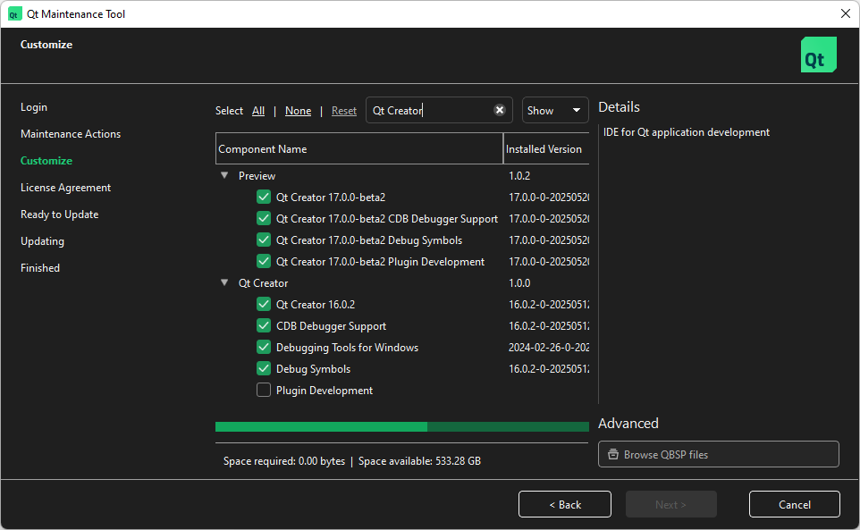

Installation
You can install either a commercial or open source version of Qt Creator in the following ways:
- As a part of a Qt installation with Qt Online Installer.
- As a stand-alone tool.
You can install and run several Qt Creator versions on the same system and use them in parallel.
Qt Online Installer
Qt Online Installer has both the latest released version of Qt Creator and a beta version or a release candidate of the upcoming release, depending on the release cycle.
Search for Qt Creator in the Qt Online Installer to find the available versions.

Note: You need a Qt Account to use Qt Online Installer.
If you develop Qt Quick applications, consider also installing Qt Design Studio.
Standalone Qt Creator
You can get the open source version of Qt Creator in the following ways:
- Use a package manager
- Download an installation package
- Build Qt Creator from sources
Start the Qt Creator installer in the usual way for your system and follow its instructions to install Qt Creator.
To develop with Qt, you also need a Qt version. You can register Qt versions in the stand-alone Qt Creator to use them in kits.
Using Package Managers
The Qt Creator packages that package managers offer are not officially supported. For links to official releases, see Downloading Installation Packages.
On Windows you can use chocolatey, and on macOS you can use brew. These package managers install the latest Qt Creator releases available online. That is, they pick up the 7zip archives and extract them on your system.
For example, on Windows, enter:
choco install qtcreator
And on macOS, enter:
brew install --cask qt-creator
Note: Linux distributions might have old Qt Creator versions, so you might want to download and install the latest version.
Downloading Installation Packages
You can download Qt Creator installation packages from:
- Official releases
- Your Qt Account (open source and commercial)
- Snapshots of the current and upcoming release
- GitHub
Building from Sources
To test the very latest Qt Creator version, maybe with your own changes, you can build it from sources. For more information, see Compiling Qt Creator and Building Qt Creator from Git.
See also How To: Manage Kits, Register installed Qt versions, Install plugins, and Licenses and acknowledgments.